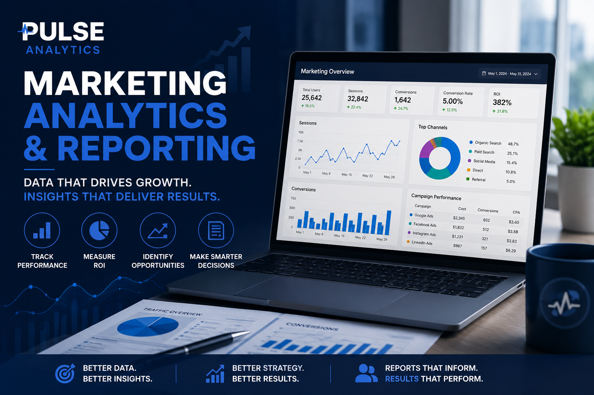
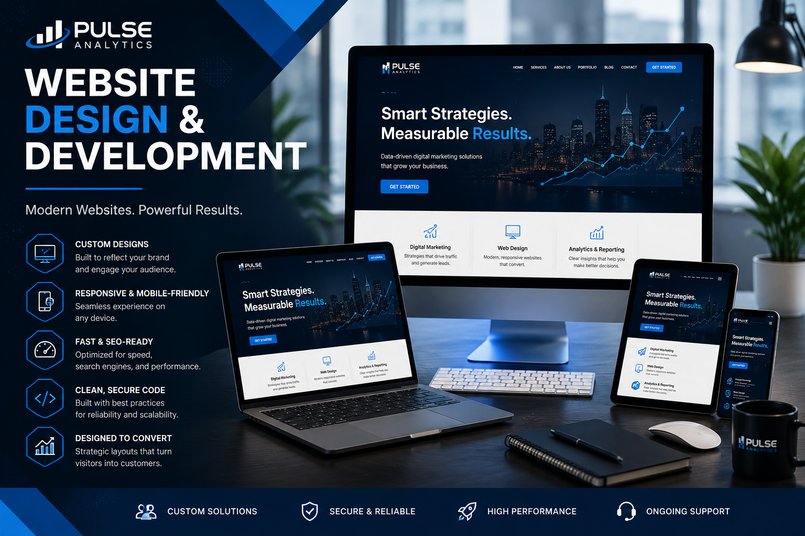
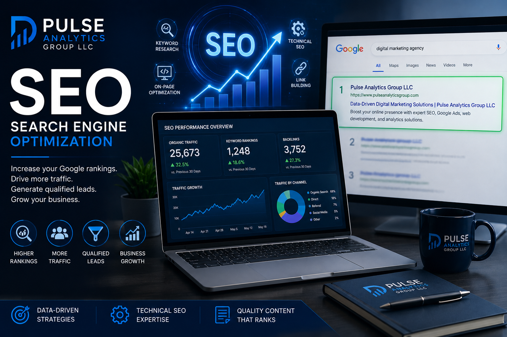

Website
Your digital foundation where visitors become customers.
Strategic Digital Marketing & Growth Solutions
Your business deserves more than disconnected marketing services. At Pulse Analytics Group, we combine website development, search engine optimization, paid advertising, analytics, artificial intelligence, and strategic marketing into integrated solutions that help businesses attract customers, increase revenue, and achieve sustainable growth.


Sustainable business growth doesn't come from a single marketing tactic. It comes from a coordinated strategy where every part of your online presence works together toward a common goal.
Your website, search engine optimization, advertising, analytics, social media, and customer experience should complement one another—not compete for attention. That's why we develop integrated marketing strategies designed to maximize visibility, improve customer engagement, and create measurable business results.
Rather than offering isolated services, Pulse Analytics Group becomes your strategic marketing partner—helping your organization make smarter decisions through data, technology, and continuous optimization.
Every business has unique goals, challenges, and opportunities. That's why we provide a comprehensive range of digital marketing services that work together to strengthen your online presence, attract qualified customers, and support long-term business growth.

Your website is often the first impression customers have of your business. Within seconds, visitors decide whether to stay, explore your services, or move on to a competitor. A professionally designed website should establish credibility, communicate your value, and encourage visitors to take action.
At Pulse Analytics Group, we create responsive, conversion-focused websites designed to support your business objectives. Every website we develop combines modern design, fast performance, accessibility, search engine optimization, and intuitive navigation to create an exceptional user experience across every device.
Whether you're launching a new business, redesigning an existing website, or expanding into e-commerce, we build scalable digital experiences that help transform visitors into loyal customers.
Ranking well in search engines isn't simply about appearing on Google—it's about connecting with people who are actively searching for the products and services your business provides.
Our search engine optimization strategies combine technical improvements, keyword research, content optimization, local SEO, and ongoing performance monitoring to help improve your visibility while creating long-term, sustainable traffic growth.
Instead of chasing quick wins, we focus on building a strong digital foundation that continues generating qualified leads long after individual campaigns have ended.

When your customers are actively searching for your products or services, your business should be front and center. Google Ads provides immediate visibility, helping you connect with qualified prospects exactly when they're ready to take action.
Pulse Analytics Group develops strategic Google Ads campaigns focused on maximizing return on investment. From keyword research and ad creation to audience targeting, conversion tracking, and ongoing campaign optimization, every decision is guided by measurable performance data.
Whether you're looking to generate more phone calls, increase website traffic, or grow online sales, we create campaigns that align with your business goals while making the most of your advertising budget.
Marketing without measurement is guesswork. Every successful strategy depends on understanding what's working, what isn't, and where new opportunities exist.
We implement analytics platforms, conversion tracking, reporting dashboards, and performance monitoring systems that provide clear insights into your marketing efforts. Instead of overwhelming you with data, we focus on the metrics that matter most to your business.
By transforming complex data into actionable recommendations, we help you make confident, informed decisions that improve marketing performance and maximize return on investment.


Social media has become one of the most effective ways for businesses to connect with customers, increase brand awareness, and build long-term relationships. Simply posting content isn't enough— successful social media requires strategy, consistency, creativity, and ongoing engagement.
At Pulse Analytics Group, we develop customized social media strategies that align with your business goals and target audience. From content planning and profile optimization to campaign management and performance reporting, we help your business create a professional and engaging online presence.
Whether your objective is increasing brand awareness, generating leads, promoting products, or building customer loyalty, we help transform social media into a valuable business asset.
Artificial intelligence is transforming the way businesses market, communicate, and operate. When implemented strategically, AI helps automate repetitive tasks, improve customer experiences, and provide valuable insights that support better business decisions.
Pulse Analytics Group helps businesses integrate AI into their marketing workflows through automation, intelligent content assistance, customer communication, and data-driven optimization.
Our goal isn't to replace human creativity— it's to enhance it, allowing your team to focus on building relationships while AI handles repetitive processes.

The most successful businesses don't rely on a single marketing tactic. They build an integrated digital marketing ecosystem where every strategy supports the others. Your website, search engine optimization, paid advertising, analytics, artificial intelligence, social media, accessibility, and branding all work together to strengthen your online presence and accelerate business growth.

Imagine launching a beautiful new website without search engine optimization. Potential customers may never discover it.
Run advertising campaigns without analytics and you'll never know which campaigns generate your best customers.
Build a social media audience without a conversion-focused website and valuable traffic may never become qualified leads.
Every digital marketing service has value on its own—but when combined into one coordinated strategy, each service amplifies the effectiveness of the others.
Your digital foundation where visitors become customers.
Increases visibility and attracts qualified organic traffic.
Generates immediate visibility while supporting long-term growth.
Measures performance and uncovers new opportunities.
Automates repetitive tasks while improving efficiency and customer engagement.
Builds relationships, trust, and long-term brand awareness.
Creates inclusive digital experiences for every visitor.
Uses performance data to continually improve every aspect of your marketing strategy.
Many agencies specialize in one service. We believe sustainable business growth comes from integrating every digital marketing discipline into one cohesive strategy. Every recommendation we make is guided by data, strengthened by technology, and focused on measurable business outcomes.
Business growth doesn't come from a single marketing tactic—it comes from an integrated strategy where every component supports the others. The Pulse Growth Ecosystem™ demonstrates how website development, search engine optimization, paid advertising, analytics, artificial intelligence, social media, accessibility, and continuous optimization work together to create sustainable business growth.

Every business is unique, but one principle remains constant: marketing performs best when every strategy is connected. A high-performing website creates opportunities for search engine optimization. Search engine optimization increases visibility. Google Ads accelerates qualified traffic. Analytics measures performance. Artificial intelligence improves efficiency. Social media builds relationships. Accessibility ensures every visitor has an exceptional experience.
Rather than viewing these services as separate investments, Pulse Analytics Group brings them together into one cohesive marketing ecosystem designed to help businesses make smarter decisions, maximize return on investment, and achieve measurable growth.
Creates the digital foundation that supports every marketing effort.
Helps customers discover your business through organic search.
Delivers immediate visibility while supporting long-term growth.
Measures performance and identifies opportunities for improvement.
Improves efficiency through intelligent automation and insights.
Builds brand awareness and strengthens customer relationships.
Creates inclusive digital experiences for every visitor.
Uses performance data to continually improve every aspect of your marketing strategy.
We're developing an interactive experience that allows you to explore how every digital marketing strategy works together to support your business goals. Select a business objective, discover the services that align with your needs, and see how each component contributes to long-term growth.
Every successful digital marketing strategy begins with a clear understanding of your business, your customers, and your goals. Our Pulse Performance Framework™ provides a structured, data-driven process that transforms ideas into measurable business growth through strategic planning, implementation, continuous optimization, and long-term partnership.
We begin by learning about your business, industry, competitors, customers, and objectives to build a complete understanding of your current digital presence.
Using data, research, and performance insights, we identify opportunities, strengths, weaknesses, and areas with the greatest potential for growth.
Every recommendation is customized around your goals, creating a comprehensive digital marketing strategy designed to maximize long-term success.
Our team implements the approved strategy across your website, search engine optimization, advertising, analytics, automation, and marketing platforms.
Every campaign is monitored using meaningful metrics, allowing us to evaluate performance and demonstrate measurable business outcomes.
Digital marketing is never finished. We continuously refine campaigns, improve performance, and identify new opportunities for sustainable growth.
We don't believe in one-time marketing projects that are forgotten after launch. The Pulse Performance Framework™ is built around continuous learning, ongoing optimization, and measurable improvement. As your business evolves, your marketing strategy evolves with it, ensuring your investment continues to generate value over time.
Every industry faces unique challenges, customer expectations, and competitive landscapes. At Pulse Analytics Group, we don't believe in one-size-fits-all marketing strategies. We develop customized solutions that align with your industry, your business objectives, and the way your customers search, engage, and make purchasing decisions.
Increase local visibility, attract nearby customers, improve Google Business Profile performance, and strengthen your presence within your community.
Build trust through professional branding, optimized websites, lead generation strategies, and search visibility that positions your expertise.
Help patients find your practice through modern websites, local SEO, accessibility improvements, and informative content strategies.
Generate qualified project leads through local SEO, Google Ads, professional websites, and strong online credibility.
Increase reservations, online orders, and customer engagement through local marketing and social media strategies.
Grow online sales through optimized shopping experiences, digital advertising, and conversion optimization.
Showcase your capabilities, generate B2B leads, and strengthen your digital presence through professional marketing solutions.
Increase community awareness, promote fundraising initiatives, recruit volunteers, and communicate your mission more effectively.
Build a strong digital foundation from day one with scalable websites, branding, SEO, analytics, and digital marketing strategies.
While every industry presents different opportunities and challenges, our approach remains consistent. We combine data, technology, strategic planning, and measurable performance to create digital marketing solutions tailored to your organization's goals. Whether you're launching a new business, expanding into new markets, or strengthening an established brand, Pulse Analytics Group is committed to helping you achieve sustainable growth.
Great marketing depends on more than creativity—it requires the right technology. Pulse Analytics Group works with leading marketing, analytics, advertising, website development, and AI platforms to help businesses build a connected digital ecosystem that supports measurable growth.
Google Ads, Analytics 4, Search Console, Tag Manager, Business Profile, and Looker Studio.
Facebook Business Manager, Instagram Marketing, Meta Pixel, and Conversion API integrations.
TikTok Ads, Business Center, Pixel implementation, and campaign optimization.
Custom WordPress websites, optimization, security, maintenance, and SEO.
E-commerce development, conversion optimization, and online store management.
Professional website development, redesigns, SEO improvements, and ongoing maintenance.
Google Analytics 4, Looker Studio, Microsoft Clarity, conversion tracking, and KPI dashboards.
ChatGPT, Microsoft Copilot, Google AI, workflow automation, and AI-powered marketing.
HTML5, CSS3, JavaScript, Python, responsive design, and accessibility best practices.
WCAG best practices, accessibility testing, inclusive design, and usability improvements.
Technical SEO audits, keyword research, site crawling, performance monitoring, and optimization.
Website security, SSL implementation, performance optimization, backups, and monitoring.
We believe technology should simplify your marketing—not complicate it. Every platform we recommend is selected because it helps improve visibility, streamline operations, measure performance, or create a better customer experience. Our focus is on building integrated solutions that align with your business objectives and evolve as your organization grows.
Digital marketing evolves every day. New technologies, advertising platforms, search engine algorithms, and accessibility standards continually reshape how businesses connect with customers online. At Pulse Analytics Group, we believe continuous education is essential to delivering modern, effective, and data-driven marketing solutions. Our commitment to professional development ensures our clients benefit from current industry knowledge, recognized certifications, and proven best practices.
Certified in search campaign strategy, keyword research, Smart Bidding, AI-powered campaign optimization, conversion tracking, and performance measurement.
Certified in Google Analytics 4, event tracking, audience analysis, reporting, attribution, and performance insights.
Ongoing training in search marketing, analytics, accessibility, AI-powered marketing, website development, and emerging digital technologies.
Modern website development utilizing HTML5, CSS3, JavaScript, responsive design, accessibility best practices, and performance optimization.
Building websites that follow accessibility best practices to create inclusive digital experiences for every visitor.
Pulse Analytics Group continues investing in advanced certifications across Google, HubSpot, AI technologies, analytics, website development, and digital marketing.
The digital landscape is constantly evolving, and so are we. Our commitment to continuous education means staying informed about the latest technologies, platform updates, accessibility standards, and marketing strategies. By combining recognized certifications with hands-on experience and ongoing research, we provide clients with modern solutions designed to deliver measurable business results today while preparing for the opportunities of tomorrow.
Choosing a digital marketing agency is about more than selecting someone to build a website or manage advertising campaigns. It's about finding a trusted partner who understands your business, develops strategies aligned with your goals, and continually adapts to help you grow. At Pulse Analytics Group, we combine strategy, technology, creativity, and measurable performance to deliver marketing solutions that create lasting business value.
Every recommendation is supported by analytics, research, and measurable performance data rather than assumptions. We believe better information leads to better business decisions.
We don't treat marketing services as isolated projects. Website development, SEO, advertising, analytics, AI, and social media are combined into one cohesive growth strategy.
Technology changes rapidly. We continuously expand our knowledge through certifications, research, and hands-on experience to deliver modern, effective marketing solutions.
You'll always understand what we're doing, why we're doing it, and how your marketing investment is performing through honest communication and clear reporting.
We focus on creating scalable marketing systems that continue generating value as your business grows and your goals evolve.
Inclusive design isn't an afterthought. Accessibility is incorporated into our development process to create better experiences for every visitor.
Pulse Analytics Group was founded on the belief that successful digital marketing should be strategic, measurable, and built around long-term partnerships. Rather than delivering one-time projects, we help businesses create sustainable marketing systems that evolve alongside changing technology, customer behavior, and business goals.
Whether you're launching a startup, growing an established business, or modernizing your digital presence, we're committed to providing thoughtful guidance, innovative solutions, and measurable results that support your continued success.

At Pulse Analytics Group, we believe successful partnerships are built on trust, transparency, and measurable results. Every client deserves honest communication, thoughtful strategy, and marketing solutions designed around their unique goals. The Pulse Promise represents the standards we hold ourselves to in every project and every client relationship.
Before recommending solutions, we take the time to understand your business, your customers, your challenges, and your long-term objectives.
Every recommendation is part of a larger digital marketing strategy designed to support measurable business growth—not isolated marketing activities.
We focus on meaningful business metrics, helping you understand how your marketing investment supports your goals through clear reporting and actionable insights.
We explain our recommendations in plain language, keep you informed throughout every project, and believe transparency is essential to a successful partnership.
Digital marketing evolves continuously. We monitor performance, identify opportunities, and optimize your strategy to help your business adapt and grow over time.
We measure our success by the value we create for our clients. Your goals become our goals, and we're committed to helping your business grow with confidence.
Choosing the right digital marketing partner is an important decision. Below are answers to some of the questions we hear most often from business owners looking to improve their online presence, attract more customers, and grow with confidence.
We offer integrated digital marketing solutions including website design and development, search engine optimization, local SEO, Google Ads management, analytics and reporting, AI marketing solutions, social media marketing, website accessibility consulting, website maintenance, and strategic digital marketing consulting.
No. Every business has different goals and challenges. During our consultation, we'll recommend only the services that best support your objectives. Some businesses benefit from a single service, while others achieve the best results through an integrated marketing strategy.
Absolutely. We work with startups, small businesses, nonprofit organizations, and established companies looking to strengthen their digital presence and generate measurable business growth.
Search engine optimization is a long-term investment. While every business is different, meaningful improvements typically develop over several months as your website gains authority, visibility, and trust with search engines.
Google Ads can begin generating traffic shortly after your campaigns are launched. Results depend on factors such as competition, targeting, budget, and landing page quality. Continuous optimization helps improve campaign performance over time.
Yes. We believe transparency is essential. Our reporting focuses on meaningful business metrics, helping you understand performance, identify opportunities, and make informed decisions.
Yes. Accessibility is incorporated into our development process to help create inclusive digital experiences while improving usability for all visitors.
We combine strategic planning, measurable analytics, integrated digital marketing, continuous optimization, and a commitment to long-term client partnerships. Rather than treating marketing services as isolated projects, we build connected digital ecosystems designed to support sustainable business growth.
Whether you're launching a new business, redesigning your website, improving your search visibility, or creating a comprehensive digital marketing strategy, Pulse Analytics Group is ready to help you achieve measurable business growth through data-driven solutions and long-term partnership.
Meet with our team to discuss your business goals, marketing challenges, and opportunities for growth.
Schedule ConsultationReceive a comprehensive review of your website, search visibility, user experience, accessibility, analytics, and overall digital marketing performance.
Request Your AuditHave questions about our services? We'd love to learn more about your business and explore how we can help.
Contact Our TeamEvery successful business begins with a strategy. Whether you're launching a new website, improving your search visibility, modernizing your marketing, or looking for a long-term digital partner, Pulse Analytics Group is ready to help you build a customized strategy focused on measurable business growth.
Meet with us to discuss your business goals, current challenges, and opportunities for growth.
Schedule NowReceive a professional review of your website, SEO, accessibility, analytics, user experience, and digital marketing performance.
Request Your AuditHave questions before getting started? We're happy to discuss your business and recommend the right solutions.
Contact UsAt Pulse Analytics Group, we believe every business deserves a marketing strategy built on data, strengthened by technology, and focused on measurable results. From website development and search engine optimization to analytics, advertising, artificial intelligence, and accessibility, every solution we provide is designed to help your business grow with confidence.
Strategic Marketing • Measurable Results • Long-Term Partnerships
Every successful business begins with a conversation. Whether you're launching a new company, modernizing your website, increasing your visibility in search engines, or creating a comprehensive digital marketing strategy, Pulse Analytics Group is ready to help you build a stronger online presence and achieve measurable business growth.
Meet with us to discuss your business goals, current challenges, and opportunities for long-term growth.
Schedule Your ConsultationReceive a professional evaluation of your website, search visibility, accessibility, user experience, analytics implementation, and digital marketing performance.
Request Your AuditHave questions before getting started? We'd love to learn about your business and recommend the solutions that best fit your goals.
Contact Pulse AnalyticsBuilding Digital Marketing Strategies That Deliver Results
"Successful digital marketing isn't about doing one thing well. It's about bringing the right strategies together at the right time to create measurable business growth."
Thank you for exploring our services. We look forward to helping you build a stronger digital presence through strategic planning, innovative technology, measurable analytics, and long-term partnership.